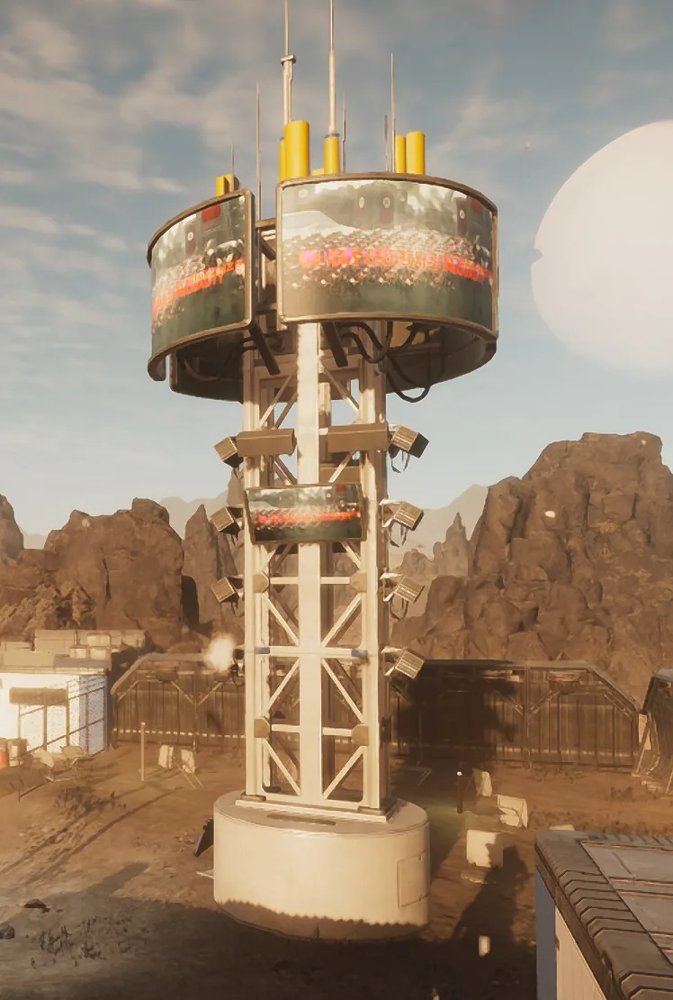
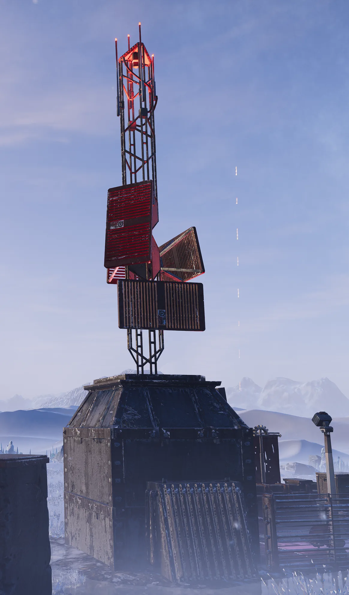
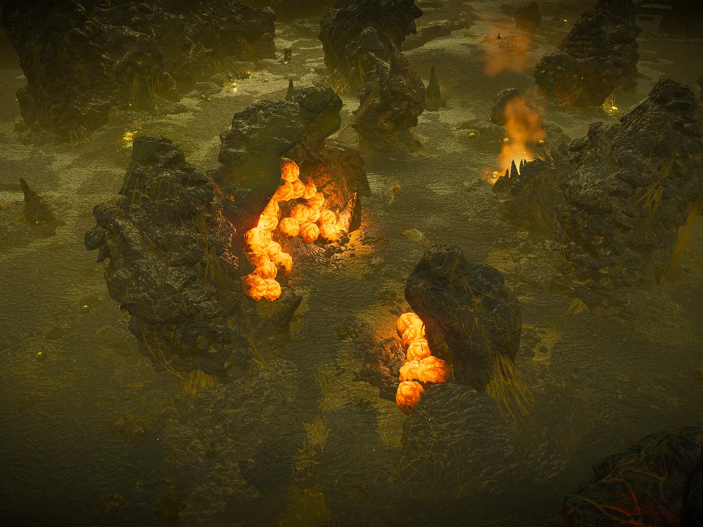
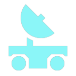

任务
全部

关停非法广播Terminate Illegal Broadcast
摧毁传输网络Destroy Transmission Network
清除孵化点Purge Hatcheries
移动雷达Mobile Radar
关停非法广播Terminate Illegal Broadcast
摧毁传输网络Destroy Transmission Network
清除孵化点Purge Hatcheries
移动雷达Mobile Radar